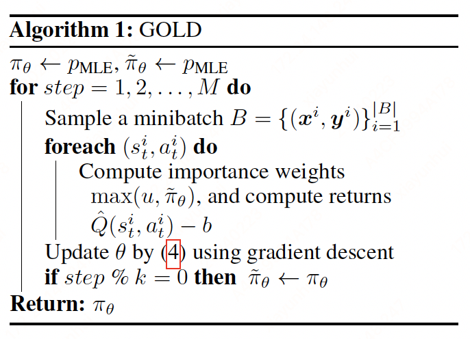

GOLD#
Note
A dominant approach to text generation is to use autoregressive models learned by maximum
likelihood estimation (MLE) on supervised data. However, this approach introduces two well-known
discrepancies between training and evaluation objectives that lead to undesired generations. First,
the training loss is negative log-likelihood, whereas the evaluation is based on human judgment of
the output quality. Second, during training, the autoregressive model conditions on the gold history/prefix; however,
at inference time it conditions on model-generated history.
We aim to bridge the gap between training and evaluation in this paper.
From MLE to RL framework#
MLE training. Given a context \(\mathbf{x}\), we want to generate a sequence of tokens \(\mathbf{y}=(y_{0},\dots,y_{T})\). Let \(p_{\text{human}}(\mathbf{y}|\mathbf{x})\) denote the data-generating distribution. Using MLE, the loss function is
Evaluation. In practice, the quality of an output often relies on task-specific metrics such as fluency, correctness, and interestingness. Here for generality we consider perceptual quality which measures how likely a human would have generated the output given the context, i.e., \(p_{\text{human}}(\mathbf{y} | \mathbf{x})\). Thus the evaluation metric is
We see that the training objective encourages high recall: the model must put probability mass on all human-generated sequences. In contrast, the evaluation metric encourages high precision: all outputs from the model must be of high quality.
RL formulation. Let’s consider generation as a sequential decision-making process. At each time step \(t\), the policy \(\pi_{\theta}\) takes an action \(a_{t}\in\mathcal{V}\), transits to the next state \(s_{t+1} = (y_{0},\dots,y_{t},\mathbf{x})\), and receives a reward \(r_{t}\). The policy corresponds to the generation model: \(\pi(a_{t}|s_{t}) = p_{\theta}(a_{t}|y_{0},\dots,y_{t},\mathbf{x})\). We can thus represent a sequence as a trajectory \(\tau=(s_{0}, a_{0}, r_{0}, \dots, s_{T}, a_{T}, r_{T})\). The set of trajectories derived from the training data is called demonstrations which show the desired behavior of a policy. The RL objective is to maximize
If we knew oracle rewards \(r_{t}=p_{\text{human}}(a_{t}|s_{t})\), then this objective would be exactly the evaluation metric we want to optimize.
Off-policy policy gradient#
Policy gradient. A straightforward way to optimize \(J(\theta)\) is policy gradient:
where \(\hat{Q}(s_{t}, a_{t})\) is the estimated return from state \(s_{t}\). The expectation is estimated by Monte Carlo samples from \(\pi_{\theta}\). In text generation, the return \(\hat{Q}(s_{t}, a_{t})\) is often a sequence-level reward such as BLEU. In practice, the policy is likely to get stuck in a region of zero reward during training, generating gibberish without receiving any learning signal.
Offline learning. To avoid zero-reward regions, we would like to reduce interaction with the environment and stay close to the demonstrated trajectories. In the extreme case, the policy is learned solely from the static demonstrations without additional interaction with the environment, which is referred to as the offline setting.
In the offline setting, we cannot estimate the expected return of \(\pi_{\theta}\) by sampling trajectories from it, and must use trajectories from a different behavioral policy \(\pi_{b}\). A common technique to estimate expectations under one distribution \(\pi_{\theta}\) given samples from a different distribution \(\pi_{b}\) is importance sampling:
with importance weights \(w_{t} = \Pi_{t'=0}^{t}\frac{\pi_{\theta}(a_{t'}|s_{t'})}{\pi_{b}(a_{t'}|s_{t'})}\)
Approximations. In practice, we use the per-action approximation: \(w_{t} = \frac{\pi_{\theta}(a_{t}|s_{t})}{\pi_{b}(a_{t}|s_{t})}\). Although this estimator is biased, empirically it has been shown to reduce variance and work reasonably well if \(pi_{b}\) and \(\pi_{\theta}\) are close. Another obstacle is that we do not know \(\pi_{b}\) which produced the demonstrations \(\mathcal{D}=\{(\mathbf{x}^{(i)}, \mathbf{y}^{(i)})\}_{i=1}^{N}\). One option is to estimate \(\pi_{b}\) on \(\mathcal{D}\). Here we take a simpler approach that uses the empirical distribution: \(\pi_{b}(\tau)=1/N\) for \(\tau\in\mathcal{D}\) and 0 otherwise. As a result, the denominator in \(w_{t}\) is a constant and can be ignored in optimization. Our final approximated gradient:
Compared with the MLE gradient: \(\sum_{i=1}^{N}\sum_{t=0}^{N}\log\pi_{\theta}(a_{t}^{i}|s_{t}^{i})\), our gradient upweights actions with high return and actions preferred by the current policy \(\pi_{\theta}\). Intuitively, it encourages the learning algorithm to focus on “easy” examples (high likelihood under the model) which improves precision.
Reward#
Let \(R\) be the reward function such that \(r_{t} = R(s_{t}, a_{t})\). To optimize the perceptual quality of a sequence, we want \(R(s, a)\) to approximate \(p_{\text{human}}(a|s)\). In the offline setting, we can restrict the domain of \(R\) to state-action pairs on the demonstrations. Next, we propose three reward functions.
\(\mathbf{\delta}\)-reward. An obvious choice is a sequence-level reward, which considers all demonstrations to be equally good and assigns zero reward to any other outputs. where a reward of one is received in the terminal state for any trajectory in the demonstrations.
Estimated \(p_{\textbf{human}}\). While \(p_{\text{MLE}}\) is not a good reward function in general since it can assign large probability mass to low-quality outputs, however, it is a reasonable approximation to \(p_{\text{human}}\) when restricted to the demonstrations. Our first reward function corresponds to a product of probabilities when summed over the trajectory:
To allow for partial credits even if bad actions are taken at certain steps, we define another reward function corresponding to the sum of probabilities:
Assuming \(\gamma=1\), the return \(\hat{Q}(s_{t}, a_{t}) = \sum_{t'=t}^{T}p_{\text{MLE}}(a|s)\).
The GOLD algorithm#
